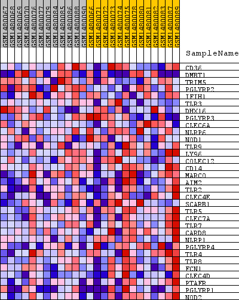
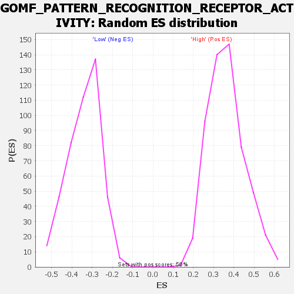

Profile of the Running ES Score & Positions of GeneSet Members on the Rank Ordered List
| Dataset | WG6v3.MRPL3.cls#High_versus_Low.MRPL3.cls#High_versus_Low_repos |
| Phenotype | MRPL3.cls#High_versus_Low_repos |
| Upregulated in class | Low |
| GeneSet | GOMF_PATTERN_RECOGNITION_RECEPTOR_ACTIVITY |
| Enrichment Score (ES) | -0.66356575 |
| Normalized Enrichment Score (NES) | -1.9473526 |
| Nominal p-value | 0.0 |
| FDR q-value | 0.019169582 |
| FWER p-Value | 0.185 |
| SYMBOL | TITLE | RANK IN GENE LIST | RANK METRIC SCORE | RUNNING ES | CORE ENRICHMENT | |
|---|---|---|---|---|---|---|
| 1 | CD36 | CD36 | 2253 | 0.055 | -0.0846 | No |
| 2 | DMBT1 | DMBT1 | 3121 | 0.039 | -0.1067 | No |
| 3 | TRIM5 | TRIM5 | 3584 | 0.034 | -0.1114 | No |
| 4 | PGLYRP2 | PGLYRP2 | 5913 | 0.014 | -0.2236 | No |
| 5 | IFIH1 | IFIH1 | 7130 | 0.008 | -0.2819 | No |
| 6 | TLR3 | TLR3 | 7712 | 0.005 | -0.3089 | No |
| 7 | DHX16 | DHX16 | 8016 | 0.004 | -0.3221 | No |
| 8 | PGLYRP3 | PGLYRP3 | 9088 | 0.000 | -0.3772 | No |
| 9 | CLEC6A | CLEC6A | 11604 | -0.009 | -0.5019 | No |
| 10 | NLRP6 | NLRP6 | 12253 | -0.012 | -0.5286 | No |
| 11 | NOD1 | NOD1 | 12277 | -0.012 | -0.5231 | No |
| 12 | TLR9 | TLR9 | 12985 | -0.016 | -0.5507 | No |
| 13 | LY96 | LY96 | 13427 | -0.018 | -0.5630 | No |
| 14 | COLEC12 | COLEC12 | 13584 | -0.019 | -0.5601 | No |
| 15 | CD14 | CD14 | 15183 | -0.032 | -0.6242 | No |
| 16 | MARCO | MARCO | 15208 | -0.032 | -0.6070 | No |
| 17 | AIM2 | AIM2 | 16306 | -0.045 | -0.6379 | Yes |
| 18 | TLR2 | TLR2 | 16374 | -0.046 | -0.6152 | Yes |
| 19 | CLEC4E | CLEC4E | 16449 | -0.047 | -0.5922 | Yes |
| 20 | SCARB1 | SCARB1 | 16528 | -0.048 | -0.5687 | Yes |
| 21 | TLR5 | TLR5 | 16983 | -0.055 | -0.5605 | Yes |
| 22 | CLEC7A | CLEC7A | 17260 | -0.060 | -0.5403 | Yes |
| 23 | TLR7 | TLR7 | 17521 | -0.065 | -0.5165 | Yes |
| 24 | CARD8 | CARD8 | 17531 | -0.065 | -0.4796 | Yes |
| 25 | NLRP1 | NLRP1 | 17536 | -0.066 | -0.4424 | Yes |
| 26 | PGLYRP4 | PGLYRP4 | 17930 | -0.076 | -0.4194 | Yes |
| 27 | TLR4 | TLR4 | 18004 | -0.078 | -0.3784 | Yes |
| 28 | TLR8 | TLR8 | 18283 | -0.088 | -0.3427 | Yes |
| 29 | FCN1 | FCN1 | 18882 | -0.124 | -0.3031 | Yes |
| 30 | CLEC4D | CLEC4D | 18949 | -0.129 | -0.2327 | Yes |
| 31 | PTAFR | PTAFR | 19010 | -0.136 | -0.1580 | Yes |
| 32 | PGLYRP1 | PGLYRP1 | 19175 | -0.157 | -0.0771 | Yes |
| 33 | NOD2 | NOD2 | 19177 | -0.157 | 0.0126 | Yes |

